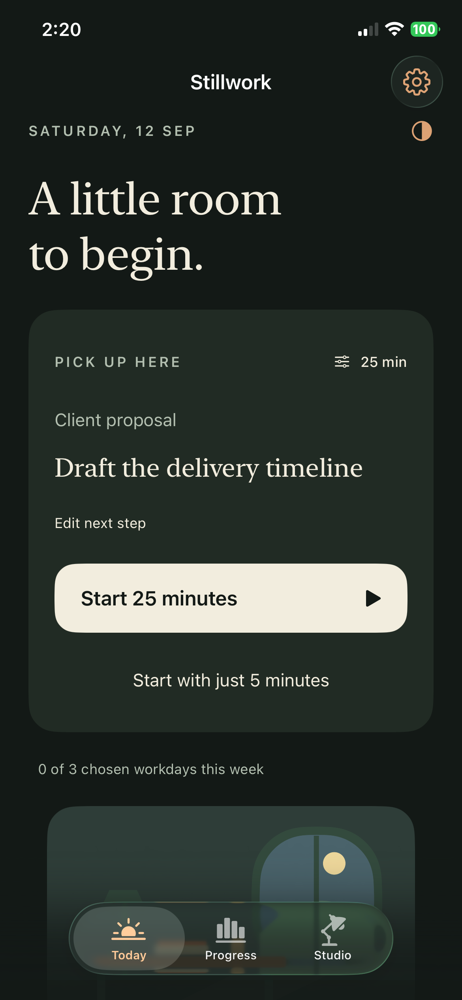

Begin. Focus. Return.
A little room to focus.
Start with one useful step. Give it a little time. Leave yourself a clear place to return.
Stillwork is a native iPhone focus companion with adjustable sessions, preparation routines, a journal, and a quiet studio that grows with your workdays.
Coming to the App Store. Requires iOS 17 or later.
Begin small
Use a five-minute start or your own focus length. Pause when life interrupts.
Find your rhythm
Prepare with a reusable routine, a short checklist, and a clear intention.
Return with clarity
Save the next useful step and pick up where you left off.

Free to begin. Room to grow.
Your timer, work threads, history, backup export, first routine, and earned studio are free. Pro adds unlimited routines and an ad-free experience: US$5 per month or US$50 per year, with local prices shown before purchase. Subscriptions renew automatically unless canceled.
Production advertising is disabled in this initial release. If ads are enabled in a future release, Pro remains ad-free.
Get help with Stillwork